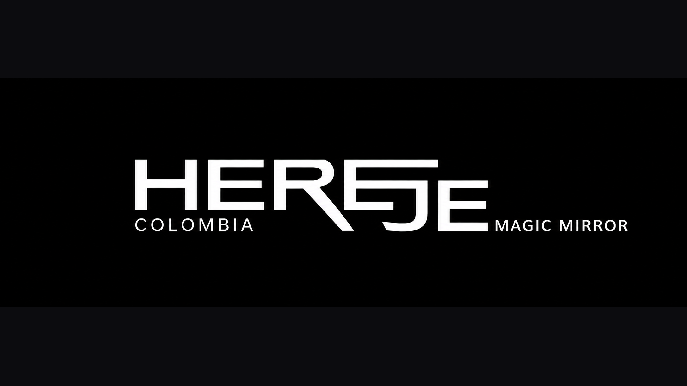
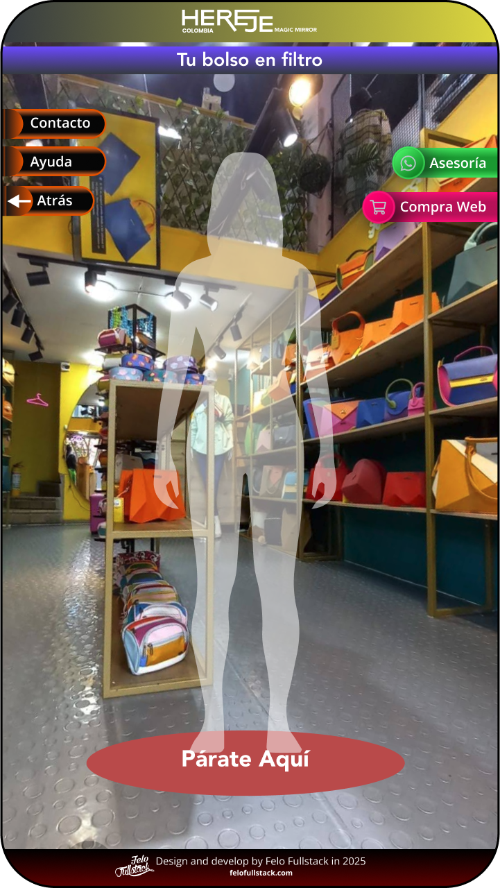
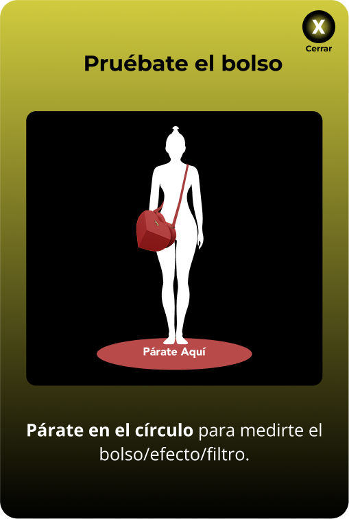
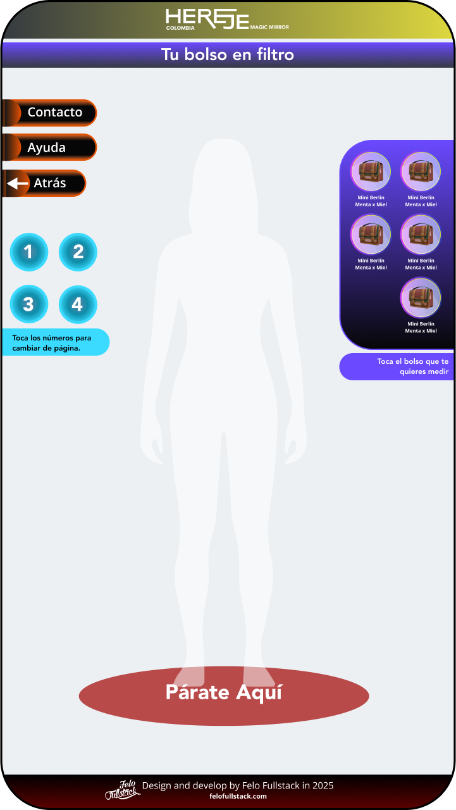
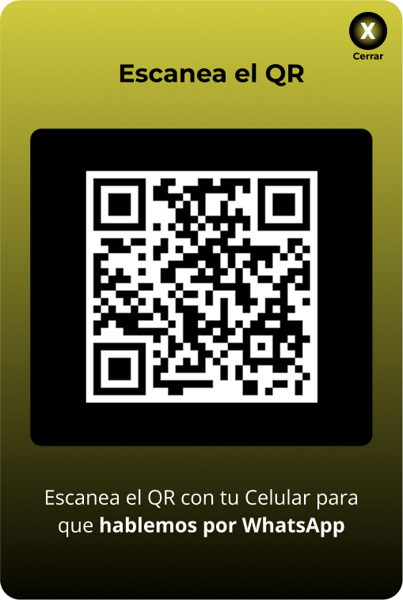

Probador de carteras en realidad aumentada para una tienda real de bolsos — con flujo de venta por WhatsApp y compra web integrado, y un pipeline de body-tracking construido desde cero en Python.

Diseñar un probador de carteras en realidad aumentada para una tienda física real: que el cliente se pare frente a la cámara y vea, en tiempo real, cómo le queda una cartera sobre su propio cuerpo — sin marcadores físicos ni apps de terceros, como un espejo mágico — con un camino directo a la compra: asesoría por WhatsApp o ir a comprarla en la tienda web.
Existían stacks de AR ya probados y reutilizables — Vuforia, Unity AR Foundation, Barracuda (el mismo motor de red neuronal usado en PHY-SYNC) — pero decidí aprender Python desde cero y construir un pipeline propio de body-tracking con OpenCV + MediaPipe, en vez de apoyarme en un SDK empaquetado.
Quería entender el mecanismo de tracking corporal desde la base, no solo implementarlo.
— decisión técnica detrás del proyectoEl resultado es un sistema de dos partes sincronizadas: un servidor en Python captura la cámara, detecta la pose completa del cuerpo (33 puntos, MediaPipe Pose) a ~30 FPS, y transmite los datos por WebSocket. Del lado de Unity, el body-tracking recibido posiciona un avatar 3D rigged en tiempo real, sobre el que se ancla el modelo 3D de la cartera.
El resto del flujo: el contacto y la compra no son botones directos — el cliente escanea un código QR desde la pantalla/kiosco para continuar en su propio celular.


Selección de cartera sobre la tienda real (izq.) e instrucción de uso (der.).

Del wireframe (izq.) a la pantalla final integrada con la tienda real (der.).

QR para pasar a WhatsApp — hay uno equivalente para ir directo a la tienda web.
Demo del prototipo — avatar y cartera en AR, probado en vivo con cámara real.
Prototipo funcional de punta a punta, probado en vivo (Unity + cámara real), con el flujo de venta (WhatsApp + compra web) ya diseñado sobre la tienda real. El AR nunca llegó a integrarse en el punto de venta — el pipeline de tracking y el diseño completo del flujo quedaron resueltos, pero el proyecto no pasó de prototipo.